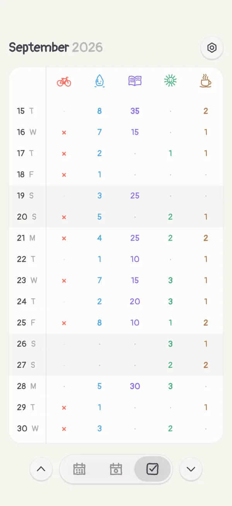

One day,
one doodle.
Boop is a diary for iPhone. Write a line about your day and it becomes a small hand-drawn doodle. Tick off your habits and the doodle takes their color. Day by day, the year fills up like a sketchbook.


Write it, sketch it, stick a photo in
Each day is a page of squared paper. A few lines about what happened, a sketch traced over a photo, the photos themselves in a pile on top.
Pick a mood and keep the doodle Boop dealt the day, or swap it for any of two hundred others.

Habits that color your days
Water, reading, a run, less coffee. Each habit has a color, and the day’s doodle takes the color of what you did.
Some habits are for every day, some for weekdays, some for three times a month, whenever it suits. A bad habit gets a limit, and going over it doesn’t go unnoticed.
 Sumiko
Sumiko Quadratus
Quadratus- still to come
Keep writing, and someone moves in
Write three days in a row and a small ink-blot ninja turns up in the margins. A week, and a crossword who thinks he’s a doctor.
Fifteen of them live in Boop, each with a page of field notes, a walk along the bottom of your year and an app icon of their own. Nobody says who’s next.

On your Home Screen
The year in dots, this month in doodles, today’s photos and sketches, your habits for the week. A glance is enough to see how the year is going.
Free to keep. Plus for more.
The diary, the doodles, the habits and the inhabitants are free. Boop Plus is a subscription or a one-time purchase for the rest.
- Widgets for your Home Screen
- A copy of your diary in your own iCloud
- As many habits as you like
- Every kind of paper, and two more fonts
- One inhabitant who comes only with Plus
What you write stays yours
No account and no ads. Your entries and photos live on your phone, with a copy in your own iCloud if you want one. Nobody else can read them.
Boop sends anonymous usage statistics and crash reports to get better, never what you write, and you can turn that off in Settings. Read the privacy policy.